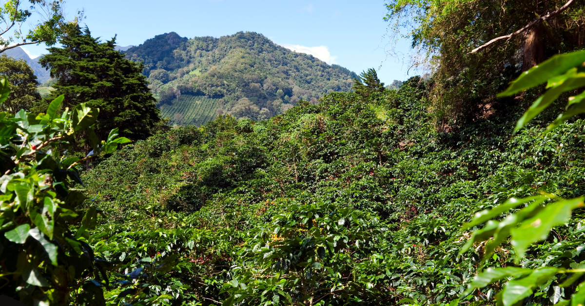

Panama Finca Deborah
Vivid Geisha
KOOK COFFEE ROASTERS
CM Hybrid Washed

원두 소개
Panama Finca Deborah Vivid Geisha CM Hybrid Washed는
파나마 Chiriquí 지역 Volcán 고지대의 Finca Deborah에서 생산된 게이샤 커피입니다.
생산자는 Jamison Savage입니다.
가공 방식
CM Hybrid Washed는 체리 상태에서 Carbonic Maceration을 거친 뒤,
워시드 방식으로 마무리되는 하이브리드 가공 방식입니다.
깨끗한 워시드 컵에 CM 특유의 향미 밀도와 복합성이 더해지는 구조입니다.
기본 정보
지역: Volcán, Chiriquí, Panama
농장: Finca Deborah
생산자: Jamison Savage
해발고도: 1,900m+
품종: Geisha
가공: CM Hybrid Washed
로스팅 포인트: Medium
컵노트
재스민 · 베르가못 · 홍차 · 실키한 질감
이 커피는 섬세한 꽃향, 차 같은 구조감, 부드럽고 매끄러운 질감이 중심이 되는 원두입니다.
추출 영상 / 레시피 보기
← 처음으로